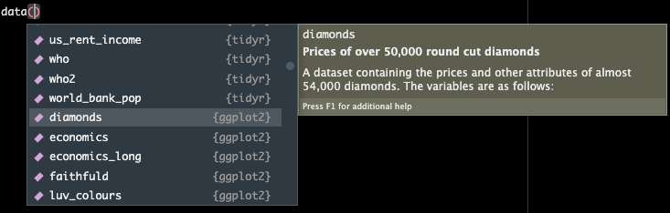
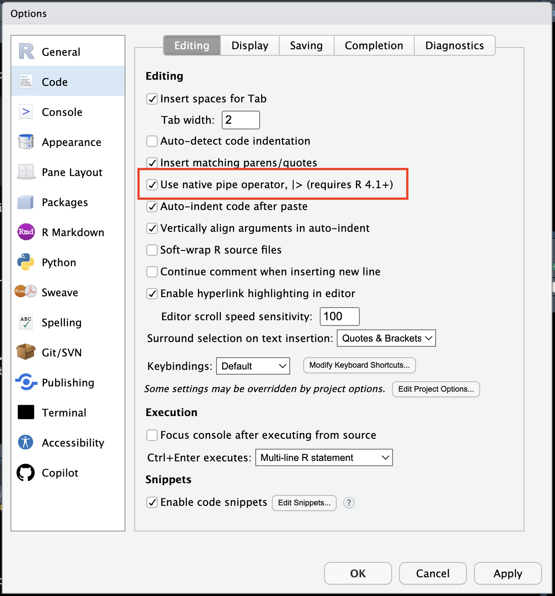

install.packages("tidyverse")Tidyverse 1: Introduction to the tidyverse
r-basics
tidyverse
1 Introduction
We are going to introduce a new package and series of functions today that are designed for data science.
2 What is the tidyverse?
“The tidyverse” is a collection of packages called that are designed for data science. You can certainly use R without using the tidyverse, but it has many packages that I think will make your life a lot easier. We will be using mostly tidyverse functions in this class, with some base R syntax scattered throughout.

The “core tidyverse” contains the 8 packages below:
dplyr: for data manipulationggplot2: a “grammar of graphics” for creating beautiful plotsreadr: for reading in rectangular data (i.e., Excel-style formatting)tibble: using tibbles as modern/better dataframesstringr: handling strings (i.e., text or stuff in quotes)forcats: for handling categorical variables (i.e., factors) (meow!)tidyr: to make “tidy data”purrr: for enhancing functional programming (also meow!)
We will be using many of these other packages in Code Club and we will talk about them as we go. There are more tidyverse packages outside of these core eight, and we will talk about some of them another time.
tl;dr Tidyverse has a lot of packages that make data analysis easier. None of them are required, but I think you’ll find many tidyverse approaches easier and more intuitive than using base R.
3 Installing new packages
So far, we have used only functions and data that exist within “base R” - or the portion of R that comes with the default install. R is an open source language, meaning people all around the world can develop tools that can be used within R. These tools are always evolving, and there are way too many of them for them to all come pre-downloaded.
These tools mostly live within something called a “package”. You can think about a package as a unit of code that can be shared and reused. These packages can include both functions and data. A person (or team) can create a package, make that available for download, and then anyone can use it.
To install packages in R that are on the Comprehensive R Archive Network (CRAN), you can use the function install.packages(). There are packages that are not on CRAN but we are not going to talk about them today. Be sure that you provide the name of your packages as a string, and put it in quotes.
4 Loading packages
Once you have downloaded a package, you now have it, you can think about it as a book that you now own. When you want to read the book, you don’t need to go buy it again, you need to simply take it off your shelf and open it. Using the function library() takes your package from where it is stored on the “shelf” in your computer, and opens it. I hope this is an ok metaphor.
library(tidyverse)── Attaching core tidyverse packages ──────────────────────── tidyverse 2.0.0 ──
✔ dplyr 1.1.4 ✔ readr 2.1.5
✔ forcats 1.0.0 ✔ stringr 1.5.1
✔ ggplot2 3.4.4 ✔ tibble 3.2.1
✔ lubridate 1.9.3 ✔ tidyr 1.3.1
✔ purrr 1.0.2
── Conflicts ────────────────────────────────────────── tidyverse_conflicts() ──
✖ dplyr::filter() masks stats::filter()
✖ dplyr::lag() masks stats::lag()
ℹ Use the conflicted package (<http://conflicted.r-lib.org/>) to force all conflicts to become errorsIt’s a good habit to not ignore warnings/messages that R gives you.
What does this warning mean?
We only need to install packages once. But, every time we want to use them, we need to “load” them, and can do this using the function
library().
5 Practice
Please install the tidyverse and then load it.
install.packages("tidyverse")# it doesn't matter here if you put tidyverse in quotes or not
# without quotes will work since you can think about it as an object
# that already exists (and not just a string of characters)
library(tidyverse) # works
library("tidyverse") # also works6 Data for today
In addition to having functions, packages also can contain data. Within the tidyverse package, there is a bunch of embedded data we can use to play around with.
If you type the function data() and then place your cursor between the parentheses and hit tab, you will see what pre-loaded data in R you have access to.
data()
Today we are going to use a dataset called diamonds that is embedded within the package ggplot (which we have since it gets automatically installed when we load the tidyverse).
Let’s learn about diamonds using some of the functions we learned already.
str(diamonds)tibble [53,940 × 10] (S3: tbl_df/tbl/data.frame)
$ carat : num [1:53940] 0.23 0.21 0.23 0.29 0.31 0.24 0.24 0.26 0.22 0.23 ...
$ cut : Ord.factor w/ 5 levels "Fair"<"Good"<..: 5 4 2 4 2 3 3 3 1 3 ...
$ color : Ord.factor w/ 7 levels "D"<"E"<"F"<"G"<..: 2 2 2 6 7 7 6 5 2 5 ...
$ clarity: Ord.factor w/ 8 levels "I1"<"SI2"<"SI1"<..: 2 3 5 4 2 6 7 3 4 5 ...
$ depth : num [1:53940] 61.5 59.8 56.9 62.4 63.3 62.8 62.3 61.9 65.1 59.4 ...
$ table : num [1:53940] 55 61 65 58 58 57 57 55 61 61 ...
$ price : int [1:53940] 326 326 327 334 335 336 336 337 337 338 ...
$ x : num [1:53940] 3.95 3.89 4.05 4.2 4.34 3.94 3.95 4.07 3.87 4 ...
$ y : num [1:53940] 3.98 3.84 4.07 4.23 4.35 3.96 3.98 4.11 3.78 4.05 ...
$ z : num [1:53940] 2.43 2.31 2.31 2.63 2.75 2.48 2.47 2.53 2.49 2.39 ...Tidyverse has a version of str() called glimpse() which does a similar thing but tries to show you more data.
glimpse(diamonds)Rows: 53,940
Columns: 10
$ carat <dbl> 0.23, 0.21, 0.23, 0.29, 0.31, 0.24, 0.24, 0.26, 0.22, 0.23, 0.…
$ cut <ord> Ideal, Premium, Good, Premium, Good, Very Good, Very Good, Ver…
$ color <ord> E, E, E, I, J, J, I, H, E, H, J, J, F, J, E, E, I, J, J, J, I,…
$ clarity <ord> SI2, SI1, VS1, VS2, SI2, VVS2, VVS1, SI1, VS2, VS1, SI1, VS1, …
$ depth <dbl> 61.5, 59.8, 56.9, 62.4, 63.3, 62.8, 62.3, 61.9, 65.1, 59.4, 64…
$ table <dbl> 55, 61, 65, 58, 58, 57, 57, 55, 61, 61, 55, 56, 61, 54, 62, 58…
$ price <int> 326, 326, 327, 334, 335, 336, 336, 337, 337, 338, 339, 340, 34…
$ x <dbl> 3.95, 3.89, 4.05, 4.20, 4.34, 3.94, 3.95, 4.07, 3.87, 4.00, 4.…
$ y <dbl> 3.98, 3.84, 4.07, 4.23, 4.35, 3.96, 3.98, 4.11, 3.78, 4.05, 4.…
$ z <dbl> 2.43, 2.31, 2.31, 2.63, 2.75, 2.48, 2.47, 2.53, 2.49, 2.39, 2.…Note that we do not see diamonds as an object in our enrivonrment, even though clearly it’s there.
7 The pipe |> or %>%
The pipe |> or %>% is a tool that allows you to take the output of one function, and send it to the next function.
You can read the pipe as “and then” - here is a theoretical example.
take_this_data |>
then_this_function() |>
then_another_function() |>
finally_a_last_function()The easiest way to see how the pipe works is with an example. We are going to go over some examples in a minute.
Some reasons I like the pipe:
- its easier to read (and doesn’t have a lot of nested parentheses)
- it doesn’t require you to create lots of interim objects which you won’t use again
- its easy to troubleshoot
The keyboard shortcut for
|>isCtrl/Cmd+Shift+M
We can change our R options so that the newer version of the pipe |> is used over the older one %>% when we use the keyboard shortcut. I try and remember to use the new one but it doesn’t always happen, so do be familiar with both.
You can go to Tools > Global Options > Code and make sure the tick mark is checked next to “Use the native pipe operator, |> (requires R 4.1+).

Of course you can assign the output of a pipe to something using the assignment operator <- and then use it for other things.
Ssome functions are not “pipe friendly” meaning they will not work using pipes. This is often because the data is not the first argument passed to the function. All tidyverse functions work with piping.
8 Selecting columns with select()
Often you will want to pick only certain columns in your dataframe, and you can do this with the function select(). You can pick columns by:
- their names
- their position (i.e., index)
- characteristics of that column
If we want to know how the arguments to select() work, we can access the documentation material about the function.
?select()The arguments to select() are:
select(.data, ...)This tells us that select() accepts a data frame (that’s good, diamonds is one), and we can pass many other expressions.
Let’s select first by name.
select(.data = diamonds, # our df
carat, cut, price) # the columns we want to pull# A tibble: 53,940 × 3
carat cut price
<dbl> <ord> <int>
1 0.23 Ideal 326
2 0.21 Premium 326
3 0.23 Good 327
4 0.29 Premium 334
5 0.31 Good 335
6 0.24 Very Good 336
7 0.24 Very Good 336
8 0.26 Very Good 337
9 0.22 Fair 337
10 0.23 Very Good 338
# ℹ 53,930 more rowsOr, we could more simply use the pipe |> or %>%
diamonds |>
select(carat, cut, price)# A tibble: 53,940 × 3
carat cut price
<dbl> <ord> <int>
1 0.23 Ideal 326
2 0.21 Premium 326
3 0.23 Good 327
4 0.29 Premium 334
5 0.31 Good 335
6 0.24 Very Good 336
7 0.24 Very Good 336
8 0.26 Very Good 337
9 0.22 Fair 337
10 0.23 Very Good 338
# ℹ 53,930 more rowsWe can read this as, take the dataset diamonds, then select the columns carat, cut, and price. That was pretty easy to read!
Note that when you use the pipe, the potential column names will auto-fill for you after you type 3 letters. You should use this option as it will help prevent misspellings. You can also hit tab to scroll through all the potential objects to select.
We can also select by index. In general I would recommend against this because its really hard to remember which column indices are which variables today, nevermind returning back to old code 1 year from now. Still I will show you how.
diamonds |>
select(c(1, 2, 7)) # you could also use the colon syntax if your columns are sequential# A tibble: 53,940 × 3
carat cut price
<dbl> <ord> <int>
1 0.23 Ideal 326
2 0.21 Premium 326
3 0.23 Good 327
4 0.29 Premium 334
5 0.31 Good 335
6 0.24 Very Good 336
7 0.24 Very Good 336
8 0.26 Very Good 337
9 0.22 Fair 337
10 0.23 Very Good 338
# ℹ 53,930 more rowsYou can also select using selection helpers like:
everything(): picks all variablesstarts_with(): starts with some prefixcontains(): contains a specific stringwhere(): selects columns where the statement given in the argument is TRUE
Here is an example of using where() to select only the columns that are numeric. The function where() asks whether the following function is TRUE or FALSE, and keeps only the occurences that evaluate to TRUE.
diamonds |>
select(where(is.numeric))# A tibble: 53,940 × 7
carat depth table price x y z
<dbl> <dbl> <dbl> <int> <dbl> <dbl> <dbl>
1 0.23 61.5 55 326 3.95 3.98 2.43
2 0.21 59.8 61 326 3.89 3.84 2.31
3 0.23 56.9 65 327 4.05 4.07 2.31
4 0.29 62.4 58 334 4.2 4.23 2.63
5 0.31 63.3 58 335 4.34 4.35 2.75
6 0.24 62.8 57 336 3.94 3.96 2.48
7 0.24 62.3 57 336 3.95 3.98 2.47
8 0.26 61.9 55 337 4.07 4.11 2.53
9 0.22 65.1 61 337 3.87 3.78 2.49
10 0.23 59.4 61 338 4 4.05 2.39
# ℹ 53,930 more rowsYou can find more helpers here.
Using select() will also set the order of your columns. More about this in practice.
9 Choosing observations with filter()

Sometimes you want to select observations (rows) based on values. To do this you use filter(). Try not to confuse this with select().
select() picks columns, while filter() picks rows.
The function filter() will keep only observations that meet your filtering criteria.
Let’s say we want to only keep the diamonds that are bigger than 3 carats.
# without the pipe
# i find this harder to read
filter(.data = diamonds,
carat > 3)# A tibble: 32 × 10
carat cut color clarity depth table price x y z
<dbl> <ord> <ord> <ord> <dbl> <dbl> <int> <dbl> <dbl> <dbl>
1 3.01 Premium I I1 62.7 58 8040 9.1 8.97 5.67
2 3.11 Fair J I1 65.9 57 9823 9.15 9.02 5.98
3 3.01 Premium F I1 62.2 56 9925 9.24 9.13 5.73
4 3.05 Premium E I1 60.9 58 10453 9.26 9.25 5.66
5 3.02 Fair I I1 65.2 56 10577 9.11 9.02 5.91
6 3.01 Fair H I1 56.1 62 10761 9.54 9.38 5.31
7 3.65 Fair H I1 67.1 53 11668 9.53 9.48 6.38
8 3.24 Premium H I1 62.1 58 12300 9.44 9.4 5.85
9 3.22 Ideal I I1 62.6 55 12545 9.49 9.42 5.92
10 3.5 Ideal H I1 62.8 57 12587 9.65 9.59 6.03
# ℹ 22 more rows# the pipe/my preferred way
diamonds |>
filter(carat > 3)# A tibble: 32 × 10
carat cut color clarity depth table price x y z
<dbl> <ord> <ord> <ord> <dbl> <dbl> <int> <dbl> <dbl> <dbl>
1 3.01 Premium I I1 62.7 58 8040 9.1 8.97 5.67
2 3.11 Fair J I1 65.9 57 9823 9.15 9.02 5.98
3 3.01 Premium F I1 62.2 56 9925 9.24 9.13 5.73
4 3.05 Premium E I1 60.9 58 10453 9.26 9.25 5.66
5 3.02 Fair I I1 65.2 56 10577 9.11 9.02 5.91
6 3.01 Fair H I1 56.1 62 10761 9.54 9.38 5.31
7 3.65 Fair H I1 67.1 53 11668 9.53 9.48 6.38
8 3.24 Premium H I1 62.1 58 12300 9.44 9.4 5.85
9 3.22 Ideal I I1 62.6 55 12545 9.49 9.42 5.92
10 3.5 Ideal H I1 62.8 57 12587 9.65 9.59 6.03
# ℹ 22 more rowsHere I made use of the greater than > sign, and there are other operators you could also use to help you filter.
==: equal to (I usually read this as exactly equal to, and is different than using an equal sign in an equation)<,>: less than or greater than<=,>=: less than or equal to, great than or equal to&: and|: or!: not equalis.na: is NA
You can also layer your filtering. This can include in both an AND or OR fashion.
# include diamonds that are bigger than 3 carats and a Premium cut
diamonds |>
filter(carat > 3 & cut == "Premium")# A tibble: 13 × 10
carat cut color clarity depth table price x y z
<dbl> <ord> <ord> <ord> <dbl> <dbl> <int> <dbl> <dbl> <dbl>
1 3.01 Premium I I1 62.7 58 8040 9.1 8.97 5.67
2 3.01 Premium F I1 62.2 56 9925 9.24 9.13 5.73
3 3.05 Premium E I1 60.9 58 10453 9.26 9.25 5.66
4 3.24 Premium H I1 62.1 58 12300 9.44 9.4 5.85
5 3.01 Premium G SI2 59.8 58 14220 9.44 9.37 5.62
6 4.01 Premium I I1 61 61 15223 10.1 10.1 6.17
7 4.01 Premium J I1 62.5 62 15223 10.0 9.94 6.24
8 3.67 Premium I I1 62.4 56 16193 9.86 9.81 6.13
9 3.01 Premium I SI2 60.2 59 18242 9.36 9.31 5.62
10 3.04 Premium I SI2 59.3 60 18559 9.51 9.46 5.62
11 3.51 Premium J VS2 62.5 59 18701 9.66 9.63 6.03
12 3.01 Premium J SI2 60.7 59 18710 9.35 9.22 5.64
13 3.01 Premium J SI2 59.7 58 18710 9.41 9.32 5.59# include diamonds that are bigger than 3 carats OR a Premium cut
# "|" (above the return key) is the symbol for "or"
diamonds |>
filter(carat > 3 | cut == "Premium")# A tibble: 13,810 × 10
carat cut color clarity depth table price x y z
<dbl> <ord> <ord> <ord> <dbl> <dbl> <int> <dbl> <dbl> <dbl>
1 0.21 Premium E SI1 59.8 61 326 3.89 3.84 2.31
2 0.29 Premium I VS2 62.4 58 334 4.2 4.23 2.63
3 0.22 Premium F SI1 60.4 61 342 3.88 3.84 2.33
4 0.2 Premium E SI2 60.2 62 345 3.79 3.75 2.27
5 0.32 Premium E I1 60.9 58 345 4.38 4.42 2.68
6 0.24 Premium I VS1 62.5 57 355 3.97 3.94 2.47
7 0.29 Premium F SI1 62.4 58 403 4.24 4.26 2.65
8 0.22 Premium E VS2 61.6 58 404 3.93 3.89 2.41
9 0.22 Premium D VS2 59.3 62 404 3.91 3.88 2.31
10 0.3 Premium J SI2 59.3 61 405 4.43 4.38 2.61
# ℹ 13,800 more rowsYou can play around with combining these different operators to see what happens.
10 Practice
Create a new dataframe called
small_diamonds that includes only the diamonds that are less than 0.5 carats. How many diamonds does this include?
small_diamonds <- diamonds |>
filter(carat < 0.5)
nrow(small_diamonds)[1] 17674
Subset diamonds into a new df (
diamonds_subset) so that it only includes diamonds less than $10,000, and only information for carat, cut, price, and color, in that specific order.
diamonds_subset <- diamonds |>
filter(price < 10000) |>
select(carat, cut, price, color) # select both picks and orders!
What is the mean and standard deviation of carat of the diamonds that passed your critieria in
diamonds_subset?
Using the $
# mean
mean(diamonds_subset$carat)[1] 0.6968262# sd
sd(diamonds_subset$carat)[1] 0.3574645Using the pipe
# mean another way
diamonds_subset |>
pull(carat) |> # this is necessary because mean requires a vector!
mean()[1] 0.6968262# or you could go full pipe!
diamonds |>
filter(price < 10000) |>
pull(carat) |>
mean()[1] 0.6968262# sd another way
diamonds_subset |>
pull(carat) |> # this is necessary because mean requires a vector!
sd()[1] 0.3574645# or you could go full pipe!
diamonds |>
filter(price < 10000) |>
pull(carat) |>
sd()[1] 0.3574645
How many diamonds in this dataset are both Ideal cut, less than $10,000, and bigger than 1.5 carats??
When you are trying to filter using “and” and have more than 2 items, use a comma in between them.
diamonds |>
filter(price < 10000, cut == "Ideal", carat > 1.5) |>
nrow()[1] 327